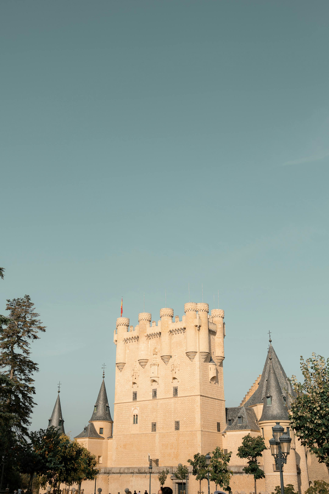
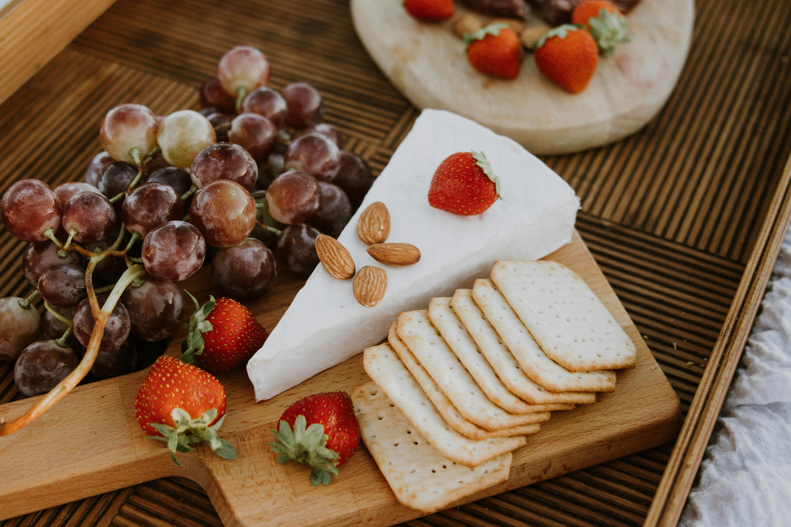
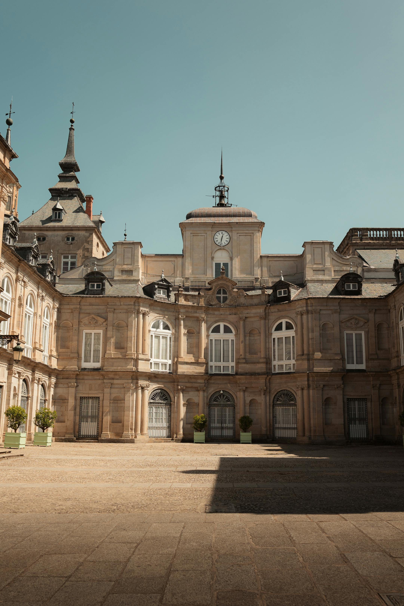
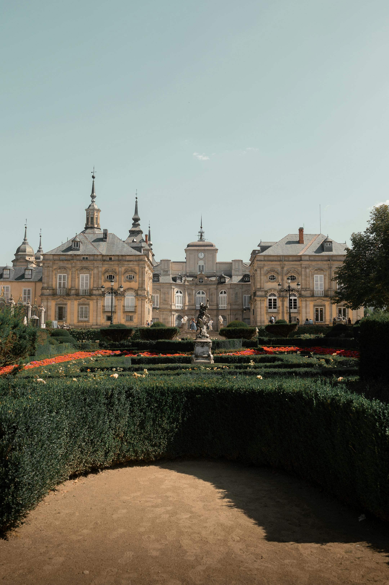
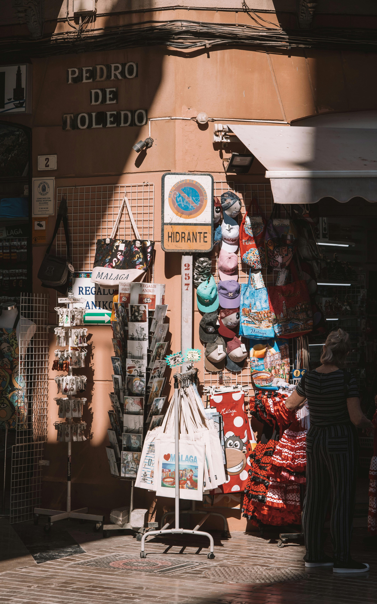
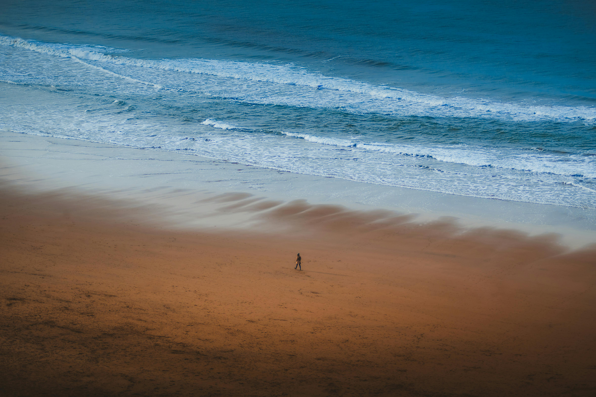

Best Travel Tips
- Best time to visit: Spring (March to May) and Fall (September to November).
- Embrace the siesta culture; many shops close in the afternoon.
- Try local markets for fresh produce and authentic food.
- Learn a few basic Spanish phrases; it goes a long way with locals.
- Use public transport like trains and metros to explore cities efficiently.
Best Cuisines and Dining Recommendations
Spanish cuisine is celebrated for its bold flavors and fresh ingredients. Popular dishes include:
- Tapas: Small plates of food served with drinks.
- Paella: A traditional rice dish originating from Valencia.
- Jamón Ibérico: Cured ham from the Iberian Peninsula.
- Churros: Fried dough pastries often served with hot chocolate.
Best Accommodation Options
Consider these popular accommodation types for your stay:
- Hotels: Ranging from luxury to budget-friendly options.
- Hostels: Affordable lodging with shared facilities.
- Vacation Rentals: Options like Airbnb for a home-like experience.
- Paradores: Unique stays in historic buildings such as castles and monasteries.
Best Local Culture and Traditions
Experience Spain’s vibrant culture through:
- Flamenco: A passionate dance and music style from Andalusia.
- Festivals: Events like La Tomatina and Semana Santa.
- Art: Discover works from renowned artists like Picasso and Dalí.
Best Top Tourist Attractions
- Sagrada Familia, Barcelona
- Alhambra, Granada
- Park Güell, Barcelona
- Guggenheim Museum, Bilbao
- Mezquita-Catedral, Córdoba
Best Transportation Guides

Getting around Spain is easy with various transport options:
- Trains: High-speed trains connect major cities.
- Metro: Efficient public transport in cities like Madrid and Barcelona.
- Buses: Extensive networks covering rural areas.
- Car Rentals: Ideal for exploring the countryside at your own pace.
Best Outdoor Activities and Adventure
Spain's diverse landscapes offer numerous outdoor activities:
- Hiking: Explore trails like the Camino de Santiago.
- Beach Activities: Enjoy sunbathing and water sports on the Costa del Sol.
- Skiing: Head to the Sierra Nevada or the Pyrenees.
- Cycling: Discover scenic routes across the countryside.
Best Shopping and Souvenirs
Don't miss these shopping experiences:
- Markets: Local markets for fresh produce and handmade crafts.
- Fashion: Explore Spanish fashion brands in boutiques.
- Souvenirs: Pick up items like pottery, fans, and local wines.
Best Weather and Best Time to Visit
Spain enjoys a diverse climate; here’s what to expect:
- Spring (March to May): Pleasant temperatures and blooming flowers.
- Summer (June to August): Hot weather, ideal for beach visits.
- Fall (September to November): Mild temperatures and fewer crowds.
- Winter (December to February): Cooler, especially in the north, great for skiing.